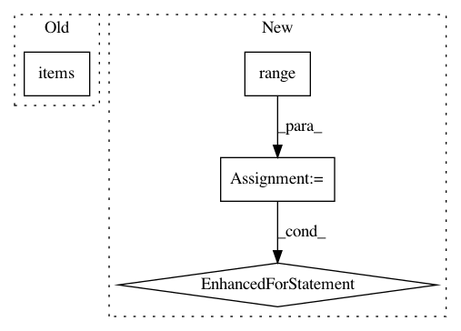

22c70843b3c52f294918471bf0d03aa43ba29243,demo/demo/overview_view.py,,show_overview,#,11
Before Change
break
alpha_table[chr(alpha)].append(p)
for k,v in alpha_table.items():
if len(v)==0:
continue
add_num = rownum - len(v)%rownum // 填充的数量
After Change
break
alpha_table[chr(alpha)].append(p)
for kk in range(ord("A"),ord("Z")+1):
k = chr(kk)
v = alpha_table[k]
if len(v)==0:
continue
add_num = rownum - len(v)%rownum // 填充的数量
add_num %= rownum
for i in range(add_num): // 补充上多余的空位
v.append("")
leaf += "<div><span class="label label-warning"> "+k+" </span></div><br/>"
for i in range(len(v)):
if i%rownum == 0:
leaf += "<div class="row">"
leaf += "<div class="col-md-3">"
leaf += "<p><a href="detail?title=" + v[i] + "">"
if len(v[i]) > 10:
leaf += v[i][:10] + "..."
else:
leaf += v[i]
leaf += "</a></p>"
leaf += "</div>"
if i%rownum == rownum-1:
leaf += "</div>"
leaf += "<br/>"
ctx["leaf"] = leaf
// 父节点列表
father = "<ul class="nav nav-pills nav-stacked">"
In pattern: SUPERPATTERN
Frequency: 3
Non-data size: 4
Instances
Project Name: qq547276542/Agriculture_KnowledgeGraph
Commit Name: 22c70843b3c52f294918471bf0d03aa43ba29243
Time: 2018-01-31
Author: 547276542@qq.com
File Name: demo/demo/overview_view.py
Class Name:
Method Name: show_overview
Project Name: scikit-learn-contrib/categorical-encoding
Commit Name: b5034279b48ae96ffdd4714f96e0f62b0f4807fc
Time: 2018-10-26
Author: jcastaldo08@gmail.com
File Name: category_encoders/ordinal.py
Class Name: OrdinalEncoder
Method Name: ordinal_encoding
Project Name: GoogleCloudPlatform/healthcare
Commit Name: 1127ff5fdcdfbe89efee98614cf4d4e2c29da4a8
Time: 2019-02-11
Author: noreply@google.com
File Name: deploy/utils/utils.py
Class Name:
Method Name: resolve_env_vars